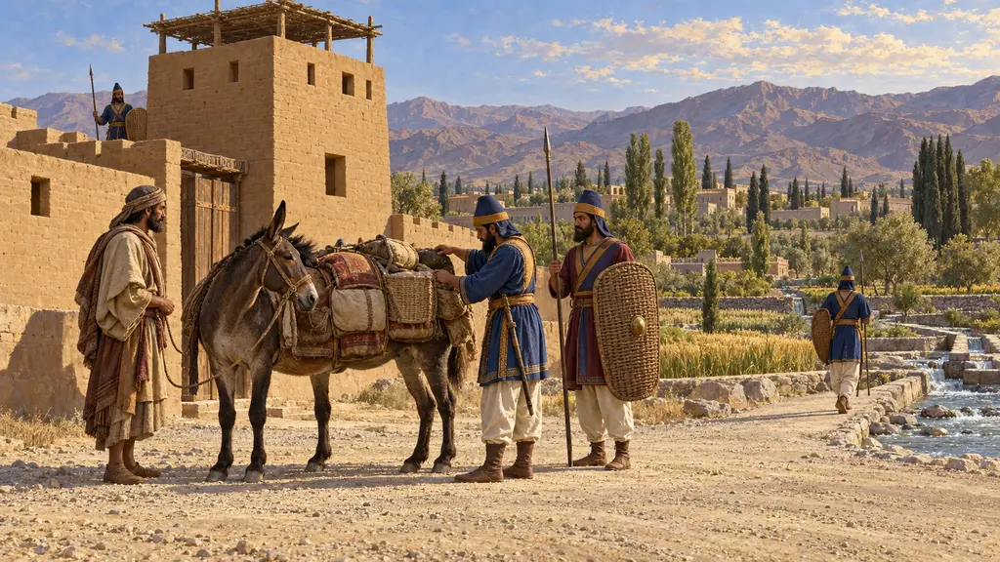
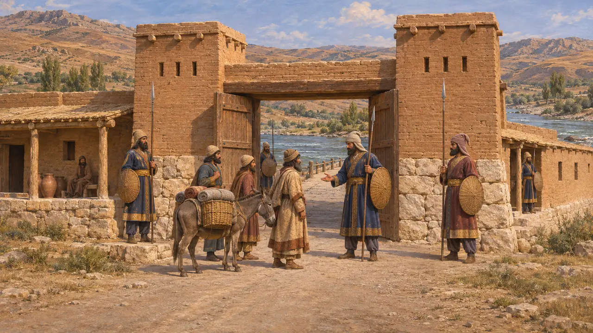
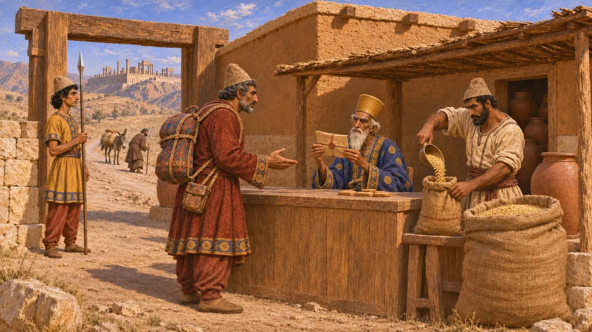
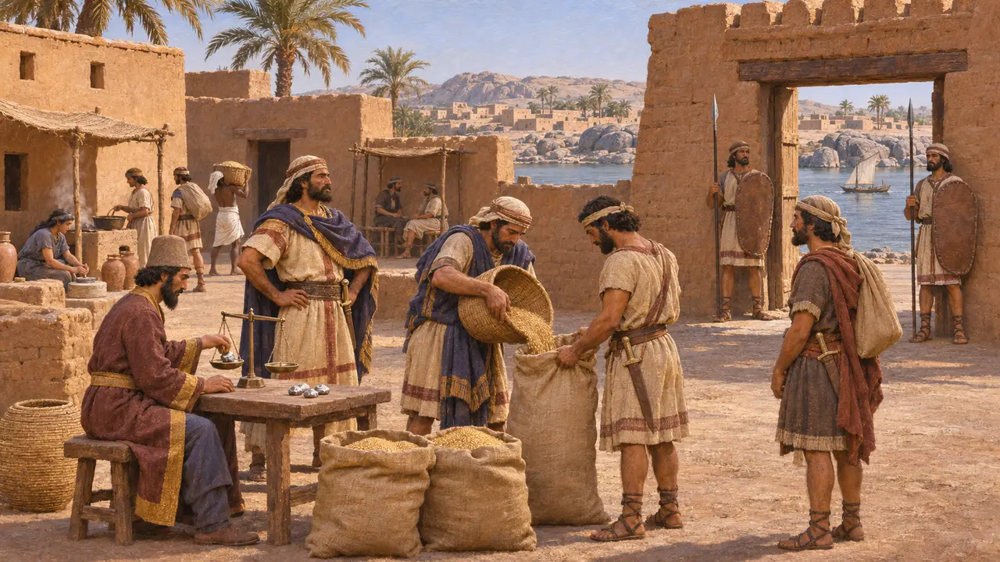
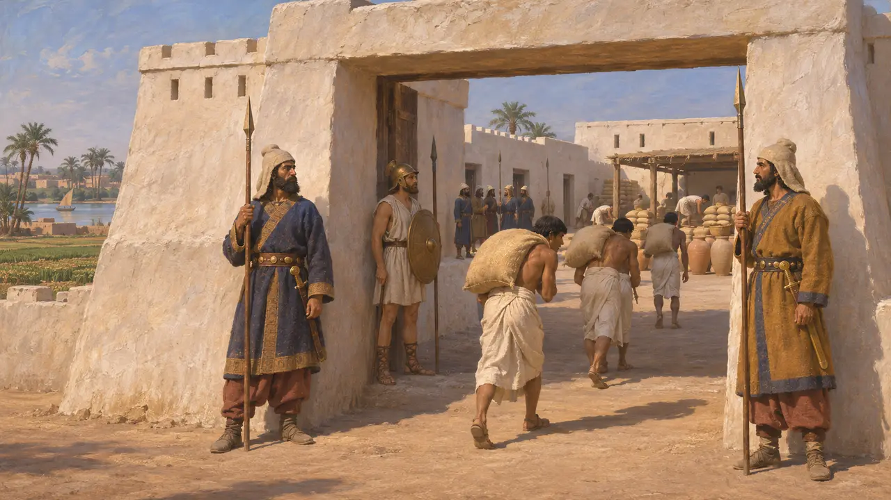
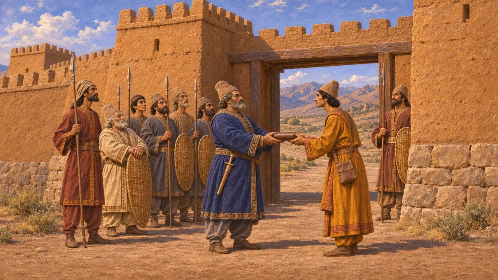

衛兵所
アケメネス朝の帝国における警備された渡し場・門・砦、紀元前6〜5世紀
ペルシアの王たちは、橋や渡河点、山間の関門、辺境の砦に兵士を配置した。これらの拠点は帝国を結びつける道筋を押さえ、通行する者を管理した。ギリシアの著述家たちは警備された関門について記しており、ペルシアの行政記録からは、王命を帯びた旅行者たちが道中でどのように通行を許可され、食料を支給されたかがわかる。
ゲームでは： 本作では王の道と同じく、衛兵を詰所に配置している。彼らが町を巡回して家々の平穏を守るのは脚色であり、史料が示すのは渡河点や砦の衛兵であって、町の街路を巡る警邏ではない。

王の道の関門と番兵
古代の記述ヘロドトスは、王の宿駅と宿舎を備えたサルディスからスーサへの道について記している。彼によれば、ハリュス川では旅人は堅固な衛兵所が守る門を通らねばならず、キリキアに入る際には二つの門と二つの衛兵所があったという。彼がこの記述をどこから得たのかは議論があり、ペルシアの行程表に拠ったとも、ギリシア人旅行者の報告に拠ったとも考えられる。
Herodotus 5.52

封印された文書と旅の糧食
同時代の記録紀元前509年頃から493年頃のペルセポリス城砦文書には、王や高官が発行した封印付きの文書（エラム語でhalmi）に基づいて、旅人が道沿いの補給地点で配給を受け取ったことが記録されている。文書には一行がどこから来てどこへ向かうのかがしばしば記されている。紀元前5世紀後半のサトラップ、アルシャマのアラム語の書簡は、家令の旅路に沿って名を挙げた各地の役人たちに、家令への配給の支給を認めている。
R. T. Hallock, Persepolis Fortification Tablets, 1969; G. R. Driver, Aramaic Documents of the Fifth Century B.C., 1954

エレファンティネの守備隊
同時代の記録エレファンティネ・パピルスは大半が紀元前5世紀のもので、エジプト南境の守備隊の姿を伝えている。エレファンティネ島にはユダヤ人兵士が、対岸のシエネにはアラム人が駐屯していた。兵士たちは指揮官のもとで部隊に編成され、糧食と銀を受け取っていた。彼らの書簡や契約文書は、ペルシアのエジプト統治に仕えた、定住した軍人共同体の姿を示している。
B. Porten, Archives from Elephantine, 1968

エジプトのペルシア人衛兵
古代の記述ヘロドトスによれば、彼の時代、ペルシア人はエレファンティネとダフナイに守備兵を置いており、それはサイス朝の王プサンメティコスが兵を配したのと同じ場所であった。また彼は、メンフィスの「白い砦」にペルシア人とその傭兵が駐屯し、エジプトの貢納による穀物で養われていたとも記している。
Herodotus 2.30; Herodotus 3.91

砦を指揮したのは誰か
係争中クセノフォンによれば、キュロスは守備隊の指揮官をサトラップから切り離し、王にのみ責任を負わせた。どの総督も一つの属州の武力をすべて握ることがないようにするためである。『キュロスの教育』は理想化された肖像であり、この分離が実際にどこまで守られたかについて歴史家の見解は分かれる。ブリアンの研究をはじめとする近年の研究は、サトラップが自らの属州で明らかに軍隊や砦を指揮していた事例を指摘している。
Xenophon, Cyropaedia 8.6.1; P. Briant, From Cyrus to Alexander, 2002
出典
- Herodotus 5.52
- R. T. Hallock, Persepolis Fortification Tablets, 1969
- B. Porten, Archives from Elephantine, 1968
- P. Briant, From Cyrus to Alexander, 2002
- D. Graf, The Persian Royal Road System, 1994
- Xenophon, Cyropaedia 8.6.1